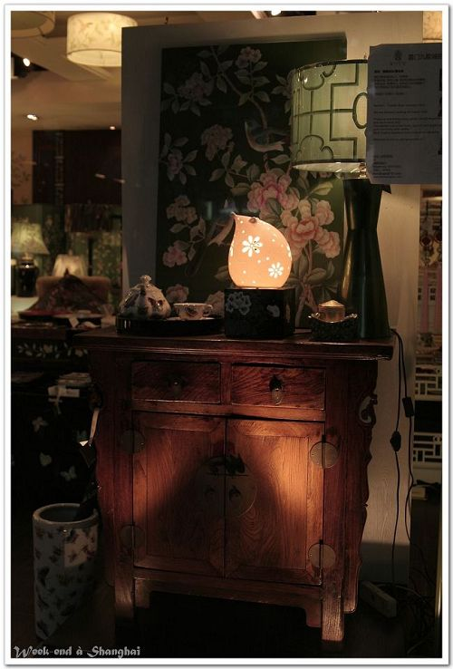
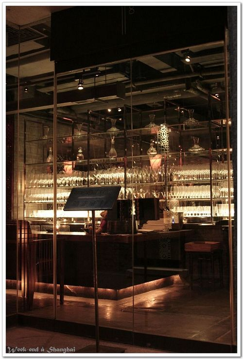

整个周末感觉都在开车，开到令人发指的地步，今生都不想再开车了，想来受身体的影响，累到四脚朝天，丝毫没有快感。二十几岁总想从这个城市流浪出去，现在却时刻都在想念这个城市。总之厌恶之极扎堆的环境，这就是我老矣的心态。


回家啦？！
the older you are, the less chances you have.
该喝茶了 喝完就好了 嘿嘿
我现在每星期开500km上下班 一次去墨尔本玩4天开了1000km 上个月去新西兰3天开800km都是山路 开车主要心态要好, 享受开车, 我主要靠捣腾音响 身体方面要注意放松肩膀和腰, 最好能按摩一下消除疲劳
开车出去超过300KM就应该安排休息. 过300公里应该会有一个城市,住1晚.第二天再出发 应该是一路玩,要是纯赶路,那飞机和火车是不错的选择
week end a shanghai 又整法语啦？
第一张照片不错。
第一张是滨江大道的星巴克啊…不错的地方
最后一张照片是哪里啊？人都站到桌子上去了，呵呵。
应该是某个酒吧。
存档只读，评论已关闭。
Name (required)
Email (will not be published) (required)
Website
« 皇帝爱皇后 | 姐姐家的晚饭 »


10 Responses to “老矣心态。”
2008-06-02
回家啦？！
2008-06-02
the older you are, the less chances you have.
2008-06-03
该喝茶了
喝完就好了
嘿嘿
2008-06-03
我现在每星期开500km上下班
一次去墨尔本玩4天开了1000km
上个月去新西兰3天开800km都是山路
开车主要心态要好, 享受开车, 我主要靠捣腾音响
身体方面要注意放松肩膀和腰, 最好能按摩一下消除疲劳
2008-06-04
开车出去超过300KM就应该安排休息. 过300公里应该会有一个城市,住1晚.第二天再出发
应该是一路玩,要是纯赶路,那飞机和火车是不错的选择
2008-06-06
week end a shanghai
又整法语啦？
2008-06-06
第一张照片不错。
2008-06-07
第一张是滨江大道的星巴克啊…不错的地方
2008-06-07
最后一张照片是哪里啊？人都站到桌子上去了，呵呵。
2008-06-07
应该是某个酒吧。
Leave A Reply
存档只读，评论已关闭。